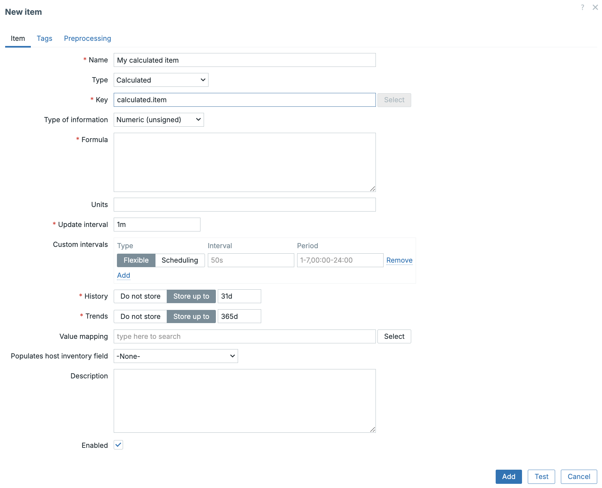
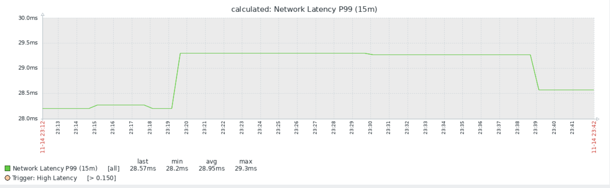

Calculated items
As monitoring environments grow, so does the need to transform raw metrics into meaningful, actionable information. Not every value you need exists on the host itself. Sometimes the most important insights come from deriving new values, ratios, differences, rates, percentages, or complex expressions combining several items.
In Zabbix, this capability is provided through calculated items. A calculated item does not collect data from the host; instead, it produces values based on an expression evaluated by the Zabbix server. This makes calculated items extremely powerful for analytics, SLA reporting, performance ratios, and synthetic metrics across multiple data sources.
In earlier Zabbix versions, calculated metrics were split into two different item types:
- Calculated items
- Aggregate items
Both were powerful but came with inconsistent syntax and separate configuration workflows. This led to confusion, especially when building larger monitoring models or template driven designs.
Starting with Zabbix 7.0, these functions were unified into a single item type: Calculated with a single expression syntax. All former aggregation logic per host, per group, or cross group is now accessed directly through functions such as:
This unification dramatically simplifies the platform:
- One place to create derived values
- One syntax to learn
- One template model for all calculations
- More powerful LLD integration
Zabbix 8.0 continues this streamlined approach, making calculated items a cornerstone for building analytics, SLA metrics, and higher-level abstractions.
What Are Calculated Items?
A calculated item is a an item whose value is produced entirely by the Zabbix server. Instead of collecting external data, it uses:
- Other item values (last(), avg(), max(), etc.)
- Arithmetic operations
- Built-in functions
- Data aggregation across hosts or host groups
The formula is evaluated at a defined interval, and results are stored exactly like any other metric.
Calculated items are especially useful when:
- You need ratios (e.g., CPU steal % vs. total CPU time)
- You want to convert units (bytes → megabytes)
- can also be done with preprocessing steps.
- You want to calculate deltas (difference between two counters)
- can also be done with preprocessing steps.
- You want to aggregate values across multiple interfaces, disks, or services
- You want to normalize data (e.g., dividing by CPU count)
- You want to create synthetic KPIs that do not exist natively
Where Calculated Items Fit in the Zabbix Data Model
Calculated items are part of the broader set of Zabbix item types. They behave like:
- Dependent items (no host communication)
- Preprocessed items (transformation of raw data)
- Internal/virtual metrics (local to Zabbix)
... but with a key distinction:
The source data does not trigger an update, only the calculated item's own interval does. This means calculated items must be configured carefully to ensure:
- Their update interval matches the freshness of source data
- Their formulas reference items that exist and return numeric values
- They do not introduce unnecessary load through excessive recalculation
How to create a Calculated Item
To create a calculated item:
- Open Data collection → Hosts →
→ Items - Click Create item
- Set Type: Calculated
- Define:
- Name
- Type: Calculated
- Key (unique identifier)
- Value type (Numeric, float, etc.)
- Formula
- Units (optional)
- Update interval
- History/Trend storage
- Save the item

calculated-item
Example Formula :
Using this in our formula would calculate the total traffic by combining traffic in with traffic out. This will only work if we have 2 exact items like this on our host.
Another more useful example as the item net.if.total exists for the example above could be the calculation of the interface utilization.
Again on our host we would need the item net.if.total[eth0] and
net.if.speed[eth0] for this to work.
Note
Zabbix does not have an Built-in item net.if.speed but we can usually read
the speed from network devices like switches. In Linux you could use as
alternative method vfs.file.contents["/sys/class/net/{#IFNAME}/speed"]
where you replace` with the correct interface name.
Some good practices for Calculated items
- Align Update Intervals: If your source item updates every 60 seconds, avoid recalculating every 5 seconds.
- Always Validate Item Existence: If one referenced item is missing, the calculated item returns unsupported.
- Use Templates, Not Hosts: Especially important when building:
- CPU utilization ratios
- Disk usage summaries
- Network traffic rollups By using templates, calculated items become reusable and consistent across infrastructure.
- Use Value Type Carefully:
- Floating point is usually safer unless you specifically need integers.
- Combine with LLD (Low-Level Discovery)
Calculated LLD prototypes allow:
- Per-disk KPIs
- Per-interface utilization percentages
- Storage pool ratios
- Multi-core CPU computations `
Practical Example
Analysing Network Latency with Percentiles
The Crucial Role of Percentile Analysis in Network Quality When assessing network latency, specifically using metrics like ICMP Ping response time, relying solely on the average (mean) can be profoundly misleading a pitfall analogous to analysing website performance without considering real world user experience.
Suppose :
- 99% of all ICMP responses are 5 ms
- 1% spike to 500 ms due to congestion
In this case, the arithmetic mean latency will still appear negligible and highly satisfactory. However, this statistical comfort masks a critical flaw: a significant fraction of users the 1% are intermittently encountering severe, perceptible network slowdowns.
To accurately capture the real network quality and expose these intermittent performance degradations, engineers must employ percentile analysis. Key percentiles, such as the P95 (95th percentile) or P99 (99th percentile), immediately reveal symptoms of network issues that averages conceal.
The use of percentiles effectively exposes sporadic but critical issues, including:
- Congestion: High traffic leading to packet queuing.
- Bufferbloat: Excessive buffering causing queueing delays.
- Microbursts: Short, sharp spikes in traffic volume.
- Jitter Spikes: Irregular variations in packet delay.
Therefore, for a robust and accurate indication of the operational network quality experienced by the majority of users, percentile analysis is indispensable.
Required Item: ICMP Response Time
Zabbix provides a built-in Simple Check for ICMP response time (fping-based). For this exercise make sure the item is already on the system available as we need it for our calculated item.
| Field | Value |
|---|---|
| Name | Icmpping |
| Type | Simple check |
| Key | icmppingsec[<target-IP>] |
| Units | s |
| Update interval | typically 1–10 seconds |
The next step is to create our calculated item.
Calculated Item: P99 Network Latency (15 minutes)
For effective trend analysis and anomaly detection, the system aggregates the ICMP response times to derive the $99^{th}$ percentile using the last 15 minutes of collected data.
| Field | Value |
|---|---|
| Name | Network Latency P99 (15m) |
| Type | Calculated |
| Key | icmppingsec.p99 (example key) |
| Value type | Numeric (float) |
| Units | s |
| Update interval | 30–60 seconds |
Formula:
With the monitoring item now collecting data, our immediate next step is to define a trigger. This trigger will allow Zabbix to notify us instantly if the defined threshold for network quality degradation is breached.
This will alert us if the P99 ping latency goes above 150 ms.
What This Trigger Detects
This is not a simple reachability check (up/down). This trigger detects:
- Congestion
- Bufferbloat
- Packet-queue delays
- Bursty latency
- Intermittent slow responses
- Micro-outages impacting users
It measures quality, not availability. Average latency might look fine, but P99 tells you:
“1% of the packets are delayed more than 150 ms — users notice this.”
or
This trigger fires if the worst latency (top 1%) over the last 15 minutes is higher than 150 ms.
This is far more meaningful for:
- Internet links
- VPNs
- WiFi infrastructure
- Cloud interconnects
- SD-WAN
- VoIP/Video systems
If we now go to latest data page we can take a look at our item and click on the graph button at the end of the screen.

p99 graph
We now have a nice overview of the quality of our network thanks to our calculated item. Now that we have seen how to create calculated items lets have a look at aggregated items.
Aggregated items
Now that we've seen how Calculated Items allow us to perform mathematical operations on data from a single host (like determining the P99 latency on one server), the next logical step is to consider the wider picture: network-wide or service wide performance.
This is where Aggregated Items come into play.
What are Aggregated Items? Simply put, an Aggregated Item gathers and processes data from multiple hosts, host groups, or even other items across your entire monitored environment.
Think of it as the tool you use to calculate the health of an entire service for instance, the average web server CPU load across your farm, or the total available disk space for all hosts in your "Database Servers" group.
Aggregated Items enable the collection of crucial metrics that are inherently distributed. They perform functions like:
- Average (avg): The mean value across a set of items.
- Sum (sum): The total combined value (e.g., total incoming traffic).
- Minimum (min) / Maximum (max): The worst or best value recorded across the group.
- Count (count): The number of items that match a specific criteria (e.g., how many servers are currently unavailable).
| Item Type | Scope of Data | Purpose |
|---|---|---|
| Calculated | Single Host (or Item) | Mathematical transformation (e.g., P99, Rate of Change). |
| Aggregated | Multiple Hosts/Groups | Statistical combination (e.g., Average, Sum, Max). |
In short, while Calculated Items help you interpret the metric for one specific device, Aggregated Items help you determine the collective status of a group of devices or an entire service.
Configuration of Aggregated Items
Aggregated Items use a special item key that differs significantly from standard
data collection methods. Instead of defining a specific check (like icmpping),
you define a calculation that operates over a set of other items.
The general format for an Aggregated Item key is:
| Component | Description | Example |
|---|---|---|
| Aggregation Function | The statistical operation to perform (e.g., avg, sum, max, min, count, foreach). |
avg |
| Target Selector | Defines the scope of the aggregation: the hosts or groups to include. | group:"Web Servers" |
| Item Key | Specifies the exact item to aggregate across the targets. | system.cpu.load[all,avg1] |
| Time Shift (Optional) | A time window to shift the data collection back (for comparison). | 1h (1 hour ago) |
Practical Examples of Aggregated Items
Here are several common scenarios demonstrating how to define these powerful global metrics:
Example 1: Total Free Space Across a Group
Goal: Monitor the collective available disk space for all hosts in the "Database Cluster" group to prevent a system-wide outage.
| Field | Configuration | Notes |
|---|---|---|
| Key | sum[group:"Database Cluster",vfs.fs.size[/,,free]] |
This key SUMS the free space (vfs.fs.size[/,,free]) from every host in the group. |
| Units | B (Bytes) |
Example 2: Average CPU Load for a Service
Goal: Determine the overall average CPU load experienced by your primary web service, which is running across the "Production Web" group.
| Field | Configuration | Notes |
|---|---|---|
| Key | avg[group:"Production Web",system.cpu.load[all,avg1]] |
This calculates the AVERAGE 1-minute CPU load across all servers in the group. |
Example 3: Counting Conditional Items with foreach
The foreach function is a highly flexible tool that allows you to calculate
statistics based on a condition within the target set. Instead of aggregating
every item, you can aggregate only those that meet certain criteria.
Goal: Count how many Linux hosts in the "All Servers" group currently have a high CPU load (load average > 4).
| Field | Configuration | Notes |
|---|---|---|
| Key | count[group:"All Servers",system.cpu.load[all,avg1],last,0,gt,4] |
|
| Type of Information | Numeric (integer) | |
| Units | hosts |
In the example above, the count function is performed on the results of the
foreach mechanism (implied by the filters):
- It checks every host in
group:"All Servers"for the itemsystem.cpu.load[all,avg1]. - The final filters (
gt,4) ensure the function only counts hosts where the latest (last) value is greater than (gt) 4. This gives you a clear count of servers currently under heavy load.
Other Aggregate Functions
Zabbix supports a wide array of aggregate functions beyond the basics shown here,
including statistics like standard deviation (stddevpop) and more specialized
counting and filtering.
For a complete list of all supported aggregate functions, including detailed syntax
and examples for foreach, consult the official Zabbix documentation.
Troubleshooting Calculated Items
- How to best troubleshoot unsupported calculated items.
Always Check first:
- Does the formula reference items that do not exist?
- Are value types compatible?
- Does the function return something numeric?
- When you have incorrect values
Check :
- Unit mismatch (bytes vs bits)
- Wrong interval compared to source data
- Missing parentheses in expression
- No Graphs Displaying
Ensure :
- Value type is numeric
- Units are properly set
- History/trends retention is not zero
Conclusion
This chapter marks a critical turning point in our monitoring journey. We moved beyond simply collecting raw data and focused on the true value of a robust system: data transformation and interpretation.
Key Takeaways - Percentile Power: We established that relying on average metrics can dangerously obscure intermittent performance issues like microbursts and congestion. Techniques like calculating the $99^{th}$ percentile ($P99$) with a Calculated Item provide a far more accurate representation of actual user experience and true network quality. - Calculated Items: These tools allow us to apply complex mathematical logic, transformations, and filters to data collected from a single host, turning raw response times into actionable quality scores. - Aggregated Items: We extended our view beyond the individual host by configuring Aggregated Items. Using functions like avg, sum, and the powerful conditional logic of foreach, we learned how to unify metrics from entire host groups or services to derive crucial metrics like service-wide free space or the total count of unhealthy hosts.
By mastering these two item types, you gain the ability to define metrics that directly correlate with your business objectives not just the underlying machine statistics. You can now build alerts and dashboards that clearly expose the health of your entire infrastructure or service stack, replacing vague metrics with concrete, measurable KPIs.
Questions
- What is the primary difference in data scope between a Calculated Item and an Aggregated Item?
- If you wanted to track the rate of change (the difference between the last two readings) of a host's disk space, which type of Zabbix item would you use, and why?
- Explain the purpose of the foreach function in Zabbix aggregation. How does it allow you to achieve a goal that a simple avg or sum function cannot?
- You need to calculate the total incoming network traffic for all devices in the "Core Routers" host group. Write the correct Aggregated Item key using the sum function, assuming the item key for incoming traffic is net.if.in[eth0]